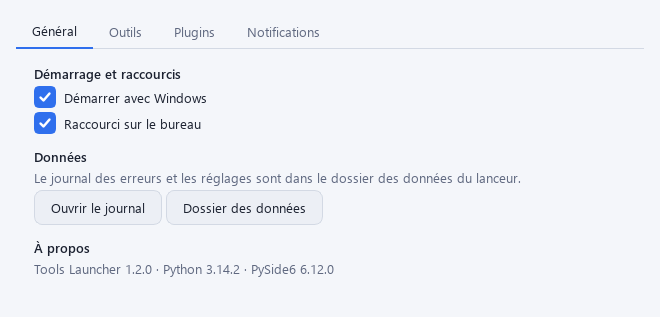
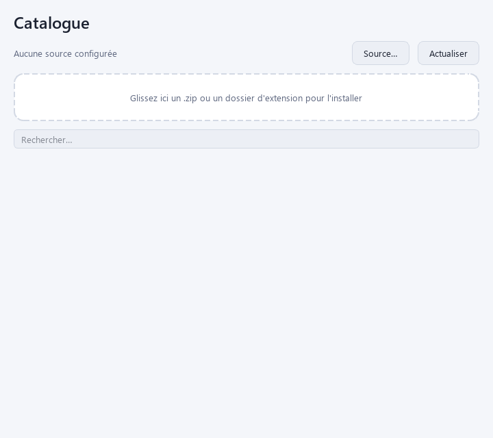
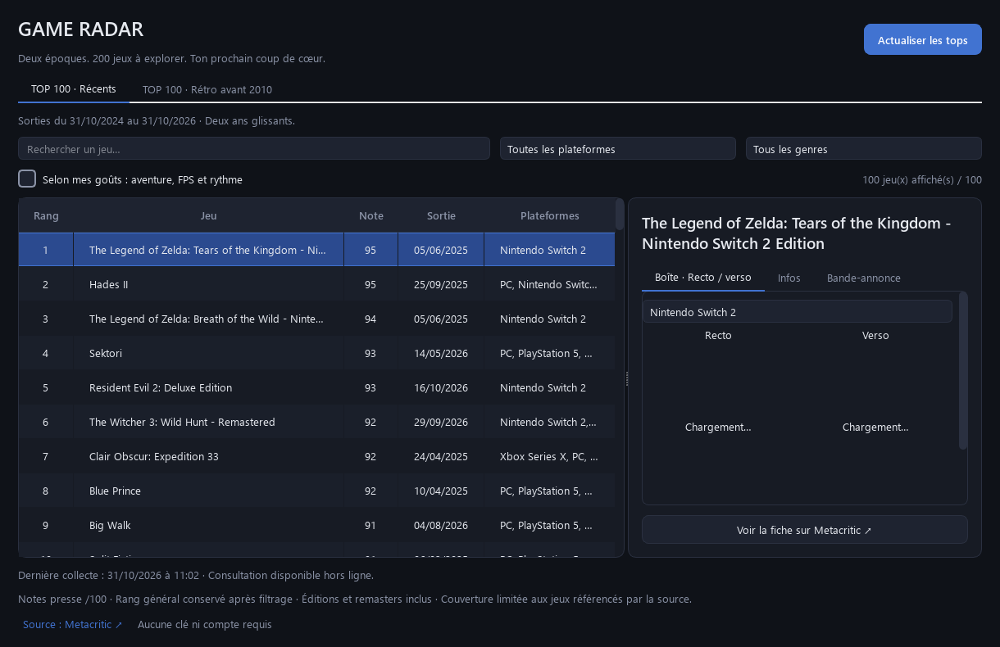

Vos outils dans un menu
Ouvrez-les depuis l’icône près de l’horloge. Retrouvez vos favoris et rangez vos outils par catégorie.
Votre atelier d’outils Windows
Un petit menu près de l’horloge. Les outils que vous choisissez. Et la possibilité d’en créer d’autres, simplement en les décrivant.
Windows 10 / 11 · Gratuit · Python seulement si nécessaire

Le principe
Vous commencez avec une installation vide. Vous ajoutez ensuite les extensions qui répondent à vos besoins.
Ouvrez-les depuis l’icône près de l’horloge. Retrouvez vos favoris et rangez vos outils par catégorie.
Installez une extension en glissant son ZIP dans le Catalogue, ou ajoutez une source fournie par une personne de confiance.
Choisissez l’apparence Sombre ou Clair, le raccourci Bureau, le démarrage Windows et vos notifications.
Le Catalogue signale les mises à jour disponibles. Vous choisissez quand les installer, en conservant les données de l’extension.
Une base volontairement vide
Aucun outil, plugin ou thème supplémentaire n’est livré. Le Catalogue est le point de départ pour personnaliser votre installation.
Comment ajouter un outil
Commencer simplement
Aucune commande à saisir. Aucune connaissance en programmation nécessaire pour suivre le guide.
Un bouton, un ZIP. Vous n’avez pas à choisir parmi des fichiers techniques.
Clic droit sur le ZIP, puis Extraire tout…. Gardez le dossier à un endroit définitif.
Double-cliquez sur Lancer Tools Launcher.cmd. Installez Python seulement si le PC le demande.
Installation vierge · ZIP pour Windows · Dernière version publiée
Nouveau depuis la version 1.4.0. Importez une clé publique ou retirez votre confiance à un signataire directement dans Catalogue → Clés de confiance…. Voir les nouveautés.
Python, si besoin. Si le launcher démarre, vous n’avez rien à installer en plus. Sinon, le guide vous accompagne sur la fiche française de Python dans le Microsoft Store.
Un problème avec le téléchargement ? Ouvrir la page de la version.
Le catalogue public
Des extensions gratuites, signées par wood51, à ajouter à votre launcher. Téléchargez un ZIP ci-dessous puis glissez-le dans la fenêtre Catalogue.
Outil · 1.5.1
Organisez les tâches du bureau dans un tableau partagé : responsables, échéances, récurrences et fichiers liés.
Télécharger Le Tableau À utiliser avec le launcher. Le lancement séparé nécessite Python et les dépendances du README.Plugin et outil · 1.0.1
Retrouvez vos fichiers habituels dans le menu du launcher. Choisissez les documents et leur application avec l’éditeur de liste.
Télécharger FichierPlugin · 0.2.0
Lancez les applications du PC depuis un menu avec leurs icônes Windows. Ajoutez des catégories si vous le souhaitez et choisissez les droits administrateur pour les outils concernés.
Télécharger ProgrammesOutil d’auteur · 1.1.0
Générez vos clés, signez vos ZIP et publiez-les dans un catalogue Git. Deux onglets séparent la publication et les clés ; les dépôts privés peuvent utiliser un jeton d’accès.
Télécharger PublicationTrois thèmes · 1.0.0
Une ambiance bleu glacé, bleu nuit ou papier clair. Installez un thème puis choisissez-le dans le menu Launcher → Thème.
Sombre et Clair sont déjà intégrés au launcher.Tout retrouver dans le launcher
Dans Catalogue → Source… → Ajouter…, choisissez Dépôt Git et collez cette adresse. Branche : main. Laissez le jeton et le sous-dossier vides.
Actualisez ensuite le Catalogue et choisissez Installer. Il vous signalera les prochaines versions disponibles.
Déjà en version 1.5.1 de Le Tableau ? Réinstallez-la pour bénéficier du correctif d’affichage des formulaires publié sous le même numéro.
Et si votre outil n’existait pas encore ?
Les skills donnent à Claude ou Codex les règles du projet pour vous aider à fabriquer une extension. Vous pouvez commencer sans savoir coder.
« Je voudrais un outil pour classer mes fichiers et retrouver rapidement les dossiers dont j’ai besoin. »

Un SDK commun, un skill simplifié. L’API 1.4.0, les règles visuelles et les modèles prêts à copier sont inclus dans le Launcher et dans le skill de création téléchargeable ci-dessus. Consulter le SDK sur GitHub.
Quelques repères
Essayez d’abord de lancer Tools Launcher. Si le PC a déjà Python et que le launcher démarre, cette étape est inutile. Sinon, le guide indique comment l’installer depuis le Store, sans commande.
La nouvelle distribution démarre sans extension. Ajoutez la source du catalogue public ou téléchargez un ZIP sur cette page puis glissez-le dans le Catalogue.
Non. Il sert à créer ou modifier des outils avec un assistant. Pour utiliser les extensions existantes, vous avez seulement besoin du launcher.
La signature vérifie l’origine et l’intégrité du ZIP ; elle ne garantit pas que le code est sans défaut. Choisissez des auteurs de confiance. Dans Catalogue → Clés de confiance…, vous pouvez importer leur clé publique, vérifier son empreinte, limiter les outils autorisés ou retirer votre confiance. Aucune clé privée n’est nécessaire pour installer un outil.